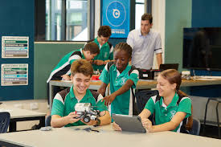

The Insight
Home
Editor's Note
Articles
Updates
Related Articles
Tech Integration in Blended Learning (Edutopia)
Using Technology to Support Student Engagement (Edutopia)

Designing Lessons With Digital Tech (Edutopia)
References
Edutopia – How Technology is Changing Classrooms
UNESCO – Why Technology in Education Must Be on Our Terms
UNESCO – Educational Innovation and ICT in Education
Edutopia – Technology Integration Resources
StopBullying.gov – Cyber Safety Guidelines
Common Sense Education – Essential Tools for Students
Contact / Share
Email:
theinsight@schoolmail.com
Follow us on social media:
Facebook
Instagram
Twitter